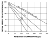

Understand the advantages and limitations of the CU triaxial test.
Understand the procedures of a CU triaxial test.
Get familiar with the ASTM D4767.
After this lecture we will able to:
Describe the details, advantages, and limitations of the CU triaxial test.
Describe the procedures and post-process the data from CU triaxial tests.
Describe basic aspects of the ASTM D4767.
Consolidated undrained triaxial test
Two stages: consolidation and shearing.
During consolidationvolume change must be allowed. Thus, pore pressure valve is open.
Shearing must occur in undrained fashion. Thus, pore pressure valve is closed.
Stages of an ICUTx test
How does the stress path looks like in a ICUTx test❓
A ICUTx test does notrotate principal stresses
Other variables of interest
\(USR\): Is the ratio of the undrained shear strength to the consolidation pressure. For a ICU triaxial:
\( USR= \cfrac{S_u}{\sigma'_{3CON}} \)
Recall that \(\bar{A}\) can also be calculated for a ICUTx test using:
\( \bar{A}= \cfrac{\Delta u}{\sigma_d} \)
Useful to validate results if OCR is known.
Steps required for a ICUTx test
The following is a brief list of the steps required for a ICUTx test.
Check apparatus state and calibrations.
Extract and prepare sample.
Weight and measure specimen.
Mount the sample on the pedestal.
Saturate using back pressure.
Consolidate sample to desired \(\sigma'_{3CON}\).
Close pore pressure valve and shear the sample.
Unmount and measure final state.
Repeat at least three times.
Post-process the data.
Back pressure saturation
In addition to the procedures learned previously, use the chart below to determine the required back pressure.

Start with initial saturation of specimen.
Intersect at line for 100% saturation.
Obtain the required back pressure.
Consolidation stage
Allows the specimen to reach equilibrium in a drained state at the effective consolidation stress \(\sigma'_{3CON}\) for which a strength determination is required
Data is used to compute the strain rate for the shear stage.
With valve closed, hold back pressure, and increase cell pressure until difference is equal to desired consolidation pressure.
Open valve and allow consolidation.
Ensure EOP is achieved.
Record axial deformations, height, and area before shearing.
Calculating the strain rate
Strain rate affects soil behavior. A larger strain rate will produce apparently stronger soils due to viscous properties. A suitable strain rate must be selected to prevent viscous effects.
\( \dot{\varepsilon_a}=4\% / (10 t_{50}) \)
The equation is based on the assumption that soil will fail at 4% of axial strain. If more adequate knowledge is available, the equation can be modified. Finally, \(t_{50}\) is obtained from the consolidation stage. If no information is available, use \(\dot{\varepsilon}_a=\) 1%/hr.
Determining the consolidation stresses
Samples should be consolidated to stresses similar to in-situ conditions prior to the application of any external load.
Example 5.1
Determine three consolidation stresses for ICUTx tests for a sample extracted at 10 m depth. If \(t_{50}=15\) min, calculate the axial strain rate and total time required for the test.
Post processing
The post processing calculations are well detailed in the ASTM D4767. Here we will revise some of the criteria to correct the data.
To calculate stresses, you need to account for change of cross sectional area.
\( A= \cfrac{A_c}{1- \varepsilon_a} \)
\(A_c \equiv\) Sample's cross-sectional area after consolidation
\(\varepsilon_a \equiv\) Axial strain
For calculating the acting deviator stress the ASTM D4767 add the piston, cap, and subtract piston friction and uplift if needed.
\( \sigma_d= \cfrac{P}{A} - \sigma_3 \)
\(P \equiv\) Load on the piston minus corrections if needed
\(A \equiv\) Corrected area of the sample
Check the ASTM D4767 for detailed definitions.
You must correct for membrane \(\Delta \sigma_{dm}\) and filter paper \(\Delta \sigma_{dfp}\):
\(K_{fp}\equiv\) Yield stress of filter paper (0.19 kN/m)
\(P_{fp} \equiv\) Perimeter of filter paper
\(E_m \equiv\) Young modulus of the membrane (1400 kPa)
\(t_m \equiv\) Thickness of the membrane
Effect ot the membrane on the deviator stress.
One of the big advantages of the ICUTx is that it allows to calculate total and effective stresses. As a result, \(S_u\) and \(\phi'\) can be calculated.
Effective stresses can be calculated using \(\sigma'= \sigma - u\). Then, plot MIT stress paths, find \(\alpha\) and \(d'\), and finally transform to \(\phi'\) and \(c'\).
Pros and cons
PROS
Simulates true triaxial state in soils.
Stress state is known at all times.
Can get axial and volumetric strains.
Can get partial information about consolidation properties.
CONS
ICD is not \(K_o\) consolidated.
Triaxial tests gives larger \(\phi'\) than direct shear tests.
Only practical for sands. CD tests on clay can take months to complete.